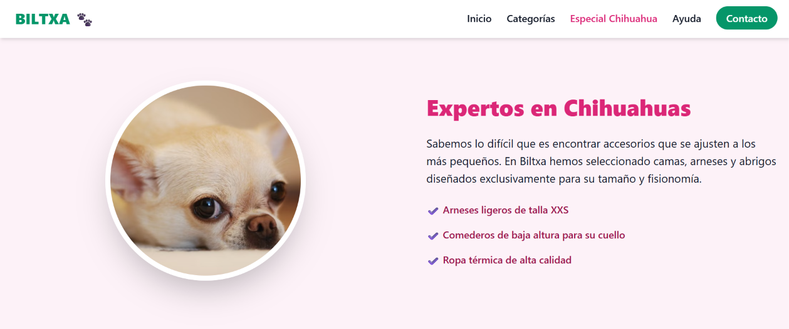

Con 9 años de experiencia en el sector industrial electromecánico, aplico el rigor, la capacidad analítica y la resolución de incidencias bajo presión al desarrollo de software limpio y funcional.

Maquetación web front-end para una tienda de artículos de mascotas. Diseño limpio, centrado en la experiencia de usuario (UX/UI) y llamadas a la acción claras.
Aplicación enfocada en la lógica back-end y bases de datos para el registro, gestión y control de stock de artículos, simulando entornos reales de producción.
Implementación de pruebas unitarias para garantizar la fiabilidad del software. Uso de herramientas de control de versiones y entornos de construcción.